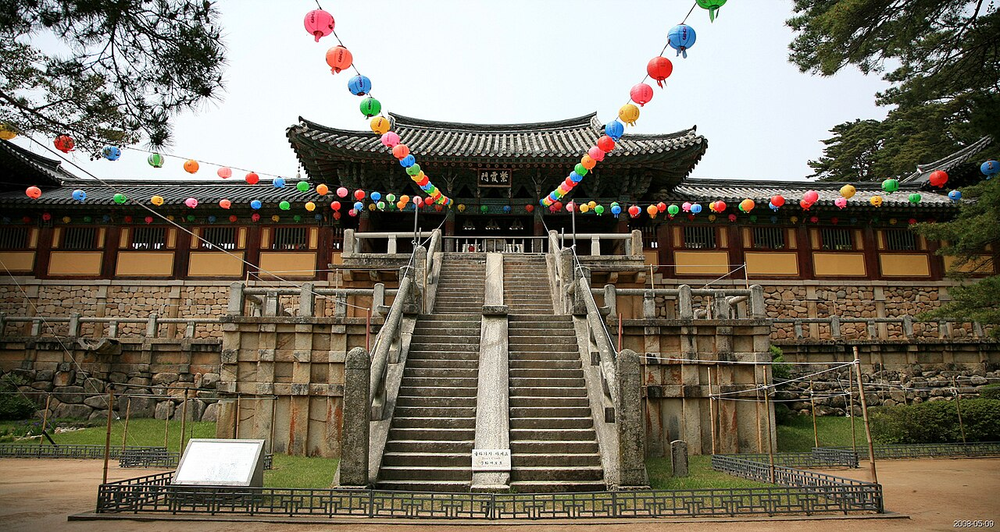

오늘 우리가 만날 네 친구

01
첨성대
별을 보던 돌탑

02
천마총
하늘 말 그림이 나온 무덤

03
석굴암
돌로 만든 동굴 절

04
불국사
부처님 나라를 담은 절
우리가 갈 순서대로 만나요
신라는 어떤 나라였을까?
약 1,000년
신라는 아주 오랫동안
이어진 나라예요[R8]
- 신라의 서울(수도)이 바로 경주예요
- 옛날 이름은 ‘서라벌’이었어요
- 그래서 경주는 도시 전체가 커다란 박물관 같아요
01 별을 보던 돌탑, 첨성대
첨성대에 숨은 숫자 비밀
돌 개수는 세는 방법에 따라 달라서 자료마다 조금씩 달라요
현장 미션 01 · 첨성대
첨성대에서 꼭 찾아봐요
🔍 미션
- 창문을 찾아라! 위, 가운데, 아래 중 어디에 있나요?
- 돌이 몇 줄인지 아래부터 10줄만 세어 봐요
- 첨성대 둘레를 한 바퀴 돌며 모양을 노트에 그려요
02 커다란 초록 언덕의 정체는?
왜 이름이 ‘하늘을 나는 말’일까?
현장 미션 02 · 천마총
천마총에서 꼭 찾아봐요
03 돌로 만든 동굴 절, 석굴암
석굴암의 비밀: 숨 쉬는 동굴
현장 미션 03 · 석굴암
석굴암에서 꼭 찾아봐요
04 부처님의 나라를 땅 위에, 불국사
쌍둥이가 아닌 두 탑

현장 미션 04 · 불국사
불국사에서 꼭 찾아봐요
왜 이렇게 소중할까?
⏳
아주 오래됐어요
천 년이 훨씬 넘었어요
🔭
옛사람의 과학
하늘 살피기, 숨 쉬는 동굴
🎨
놀라운 솜씨
돌을 나무처럼 깎은 탑, 금관
석굴암·불국사 1995년, 첨성대·천마총이 있는 경주역사유적지구 2000년 유네스코 세계유산
소중한 것을 지키는 탐험대의 약속
1눈으로만 봐요. 돌탑과 벽을 만지거나 올라가지 않아요
2조용히 걸어요. 석굴암과 불국사는 지금도 기도하는 절이에요
3정해진 길로 다녀요. 줄을 넘거나 잔디에 들어가지 않아요
4쓰레기는 가방에. 깨끗한 그대로 다음 친구에게 물려줘요
종합 퀴즈: 누구일까요?
① 나는 별을 보던 곳으로 알려진 돌탑이에요. 창문이 가운데 있어요.
첨성대
② 내 안에서 하늘을 나는 하얀 말 그림이 나왔어요.
천마총
③ 나는 돌로 만든 동굴이에요. 지금은 유리벽 뒤에 있어요.
석굴암
④ 내 마당의 탑 하나가 10원 동전에 들어가 있어요.
불국사
내 탐험 노트 미리 채우기
| 장소 | 꼭 찾아볼 것 | 왜 소중할까? (한 문장) |
|---|---|---|
| 첨성대 | 가운데 창문, 돌 10줄 세기 | ________________________ |
| 천마총 | 무덤 속 모습, 마음에 드는 물건 그리기 | ________________________ |
| 석굴암 | 부처님 표정, 둘레 조각 | ________________________ |
| 불국사 | 두 탑의 다른 점 3가지, 10원 동전 비교 | ________________________ |
SOURCES · 1/3
출처
SOURCES · 2/3
출처
SOURCES · 3/3
출처
- [R13] 새 10원 동전 발행(한국은행 보도자료)
[원문]
사진 출처 (Wikimedia Commons)
- Cheomseongdae Observatory under blue sky in Gyeongju South Korea.jpg · Basile Morin · CC BY-SA 4.0
- Three green tumuli near the forest of Gyeongju Historic Site in South Korea.jpg · Basile Morin · CC BY-SA 4.0
- Korea-Gyeongju-Cheonmachong-Entrance-01.jpg · by Julien Ambrosiano at Flickr · CC BY-SA 3.0
- Korea-Silla-Cheonmado-01.jpg · Unknown authorUnknown author · Public domain
- Front view of Buddha at Seokguram.jpg · Cultural Heritage Administration · KOGL Type 1
- Korea-Gyeongju-Bulguksa-Baegungyo and Cheongungyo-01.jpg · by Junho Jung at Flickr from South Korea · CC BY-SA 3.0
- Dabotap Pagoda 01.jpg · Bernard Gagnon · CC0
- Seokgatap Pagoda.jpg · Bernard Gagnon · CC0